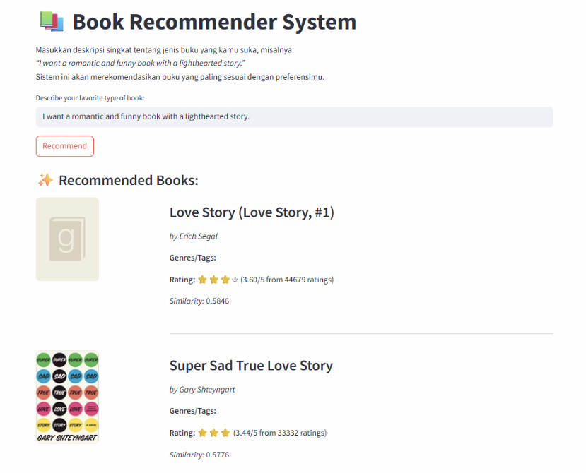
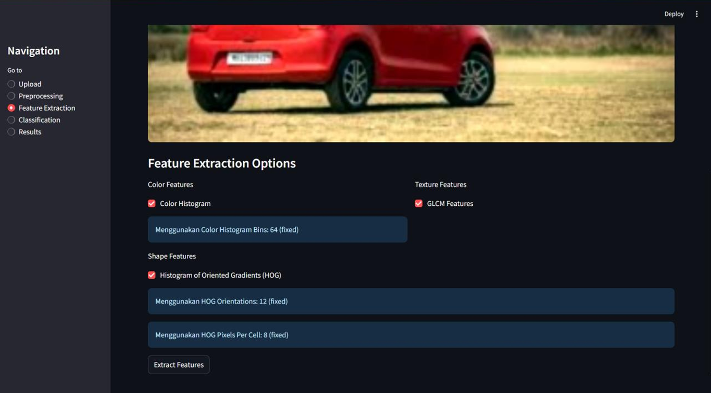
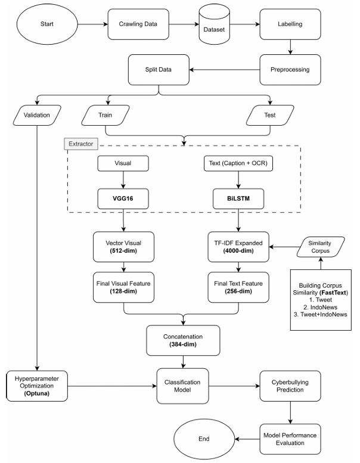

Portfolio
I build practical web applications and machine learning solutions with a focus on usability, clean implementation, and solving real problems.
I am a Bachelor of Informatics student at Telkom University with a GPA of 3.77.
I have hands-on experience across software engineering and applied AI, from building internal web platforms with Vue.js and Quarkus to developing recommendation and cyberbullying detection systems. I work well independently and in collaborative team environments.
Developed an internal web application to automate official document generation using Vue.js, Quarkus, and PostgreSQL. Worked in a team environment to deliver a production-ready internal tool.

Semantic Book DiscoveryImplemented a semantic book recommendation system using sentence-transformer embeddings and delivered it through a Streamlit web interface.

Image Classification DemoBuilt an image-based car classification system using KNN with a simple Streamlit interface for prediction and exploration.

Multimodal AI ResearchDesigned and implemented a multimodal deep learning model for detecting cyberbullying on social media, with an emphasis on feature learning and interpretability.
I am currently open to internship and entry-level software engineering opportunities. If you are hiring or would like to discuss a project, feel free to reach out.